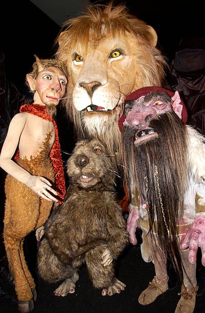
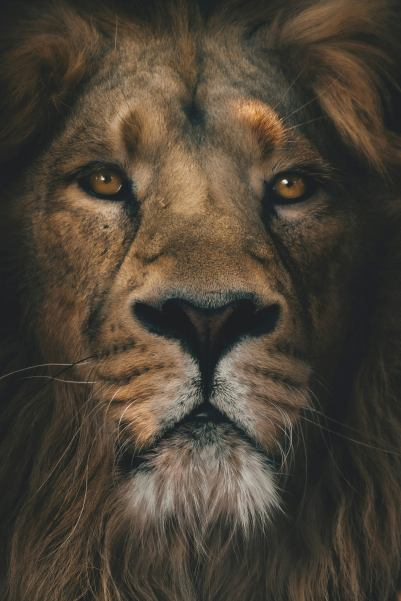

The chronicles of Narnia is a book series, there are 7 book in this series. The book is set in a magical world called Narnina where it is ruled by human kings and queen, but the is the creator of that world and he a lion is named Aslan.

The books in the series in order.
(The Magician's Nephew), (The Lion, the Witch, and the Wardrobe), (The Horse and His Boy), (Prince Caspian), (The Voyage of the Dawn Treader), (The Silver Chair), (The Last Battle).
 =======The chronicles of Narnia is a book series, there are 7 book in this series. The book is set in a magical world called narnina where it is ruled by human kings and queen, but the is the creator of that world and he a lion is named Aslan.

The books in the series in order.
(The Magician's Nephew), (The Lion, the Witch, and the Wardrobe), (The Horse and His Boy), (Prince Caspian), (The Voyage of the Dawn Treader), (The Silver Chair), (The Last Battle).

 >>>>>>> Stashed changes
>>>>>>> Stashed changes